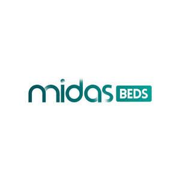

Trade Mark Journal No.2025/045 7 November 2025
UK00004280032 17 October 2025 (10,20,24)

- Class 10
- Hospital beds; Obstetric beds; Draw-sheets for sick beds; Bed bases for beds especially made for medical purposes; Hospital beds for use by burn patients; Water beds for medical purposes; Air beds for medical purposes; Bed vibrators; Massage beds for medical purposes; Heat beds for medical treatment; Incontinence bed pads; Beds specially made for use by burn patients.
- Class 20
- Three piece suites [furniture]; Beds; Bunk beds; Sofa beds; Divan beds; Foldaway beds; Chair beds; Beds, bedding, mattresses, pillows and cushions; Wooden beds; Beds for pets; Bed mattresses; Infant beds; Folding beds; Beds of wood; Water beds; Feather beds; Beds for animals; Adjustable beds; Rods for beds; Beach beds; Camp beds; Dog beds; Beds for birds; Portable beds; Transportable beds; Bedding for cots [other than bed linen]; Cat beds; Children's beds; Bedding for nursery cots [other than bed linen]; Slatted bases for beds; Bed chairs; Furniture incorporating beds; Inflatable pet beds; Portable beds for pets; Furniture being convertible into beds; Portable infant beds; Beds made of wood; Beds incorporating inner sprung mattresses; Bed slats; Mattresses; Beds for household pets; Beds incorporating divan bases; Bumper guards for cots, other than bed linen; Animal housing and beds; Futon mattresses [other than childbirth mattresses]; Wheels (Non-metallic -) for beds; Hybrid beds being soft sided waterbeds [other than for medical use]; Bumper guards for cribs, other than bed linen; Bed frames; Bean bag beds; Frames for bed canopies; Bed heads; Bed bases; Bed rails; Bath pillows; Air bed lounger; Nap mats [cushions or mattresses]; Sleeping mats for camping [mattresses]; Pillows; Mattresses [other than child birth mattresses]; Latex mattresses; Floating inflatable mattresses [airbeds]; Foam mattresses; Straw mattresses; Cots; Camping mattresses; Non-metal bed fittings; Spring mattresses; Mattresses (Spring -); Beach beds incorporating wind shields.
- Class 24
- Comforters for beds; Valances for beds; Bed blankets; Blankets (Bed -); Canopies [covers for beds]; Bed linen and blankets; Canopies (bed linen); Bed canopies; Bed linen; Linen for the bed; Linen (Bed -); Bed quilts; Bed clothes and blankets; Cot bumpers [bed linen]; Bed pads; Bed coverings; Fitted bed sheets; Flat bed sheets; Bed valances; Silk bed blankets; Bed clothes; Crib bumpers [bed linen]; Valanced bed sheets; Bed skirts; Bed blankets made of cotton; Comforters (bedding); Sofa blankets; Bed linen and table linen; Infants' bed linen; Quilted blankets [bedding]; Bed blankets made of man-made fibres; Bed covers; Bed spreads; Bed linen of paper; Bed throws; Textile fabrics for use in the manufacture of beds; Cot blankets; Bed sheets of paper; Fabric bed valances; Ticks (mattress and pillow coverings).
Furniture Online Limited